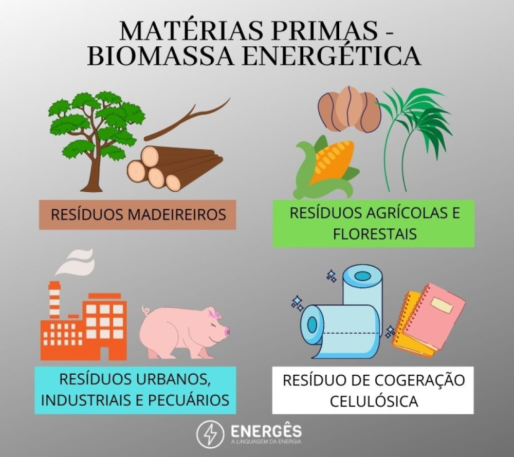
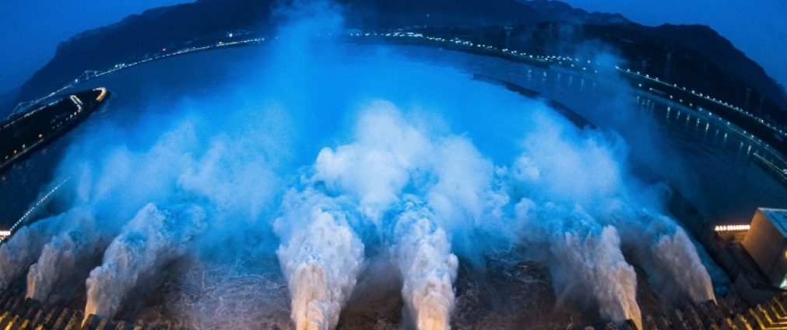
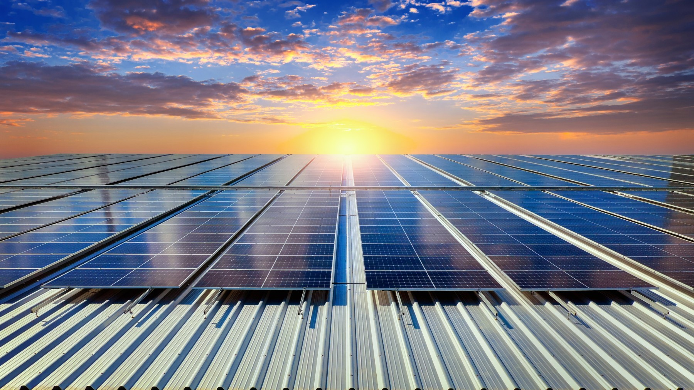

Energias Renováveis
Biomassa
A biomassa, segundo o Departamento de Engenharia Elétrica da Universidade Estadual Paulista (Unesp), é a geração de energia a partir de processos como a combustão de material orgânico produzido e acumulado em um ecossistema. Esse material, normalmente, é composto por resíduos de origem animal ou vegetal, cujas fontes podem ser vegetais lenhosos, cultivo agrícola e resíduos urbanos e industriais. Dentre os produtos derivados da biomassa estão os biocombustíveis, os óleos vegetais e o biogás.
Eólica
A energia eólica é a produzida a partir da energia cinética do vento (massas de ar em movimento). O movimento do vento move moinhos e cataventos, ou as pás de turbinas eólicas (aerogeradores) que, por sua vez, geram a energia elétrica. A produção de energia eólica é dividida em dois métodos:onshore, quando os equipamentos e usinas são instalados em terra, e offshore, quando são instalados no mar.
A produção de energia eólica pode ser dividida em dois métodos principais: onshore e offshore. No método onshore, os equipamentos e as usinas são instalados em terra firme, em locais estrategicamente escolhidos com base na constância e na intensidade dos ventos. Já no método offshore, as turbinas eólicas são instaladas no mar, geralmente em plataformas ou estruturas fixadas ao fundo do oceano. Embora seja mais complexo e mais caro de implementar, o método offshore possui vantagens significativas, como ventos mais fortes e mais constantes, além de evitar conflitos com o uso da terra.
Geotérmica

A energia geotérmica, também conhecida como energia geotermal, é uma fonte de energia renovável obtida a partir do calor proveniente do interior da Terra. Localizado abaixo da crosta terrestre, encontra-se o magma, composto por rochas derretidas, que é a fonte primária desse calor. Para aproveitar esse recurso e gerar energia, diferentes métodos são utilizados.
Um dos métodos para aproveitar a energia geotérmica consiste em utilizar gêiseres naturais, formações termais onde a água quente e o vapor são expelidos da superfície terrestre. Essa água quente pode ser utilizada diretamente para gerar energia, seja através de turbinas ou sistemas de aquecimento.
Embora a energia geotérmica tenha um grande potencial, sua aplicação ainda é limitada em algumas regiões devido a restrições geográficas e tecnológicas. No entanto, com o avanço da tecnologia e a crescente preocupação com a sustentabilidade, espera-se que o uso da energia geotérmica se expanda e desempenhe um papel cada vez mais importante na matriz energética global.
Hídrica
A energia hídrica é gerada a partir da força do movimento de um rio. O Departamento de Engenharia Elétrica da Unesp explica que esse tipo de energia é gerada em uma usina hidrelétrica ou central hidroelétrica. Apesar de ser considerada renovável, a energia hídrica não é exatamente limpa. Segundo a universidade, as centrais hidrelétricas geram alguns tipos de impactos ambientais, como o alagamento das áreas vizinhas, aumento no nível dos rios e mudanças no curso do rio represado, podendo prejudicar a fauna e a flora da região.
Ranking maiores hidrelétricas do Mundo
| Posição | hidrelétrica |
|---|---|
| 1° | Três Gargantas, China (22.500 MW) |
| 2° | Itaipu, Brasil e Paraguai (14.000 MW) |
| 3° | Xiluodu, China (13.860 MW) |
| 4° | Belo Monte, Brasil (11.233 MW) |
| 5° | Guri, Venezuela (10.200 MW) |
Solar
A energia solar pode ser gerada pelo meio fotovoltaico ou heliotérmico. De acordo com a Associação Brasileira de Energia Solar Fotovoltaica (Absolar), a solar fotovoltaica é a conversão direta da radiação do Sol em eletricidade por meio do efeito fotovoltaico, um método descoberto em 1839 pelo físico francês Alexandre Edmond Becquerel. Para gerar energia com a luz solar por esse meio, é necessário a instalação de módulos – ou painéis – fotovoltaicos.